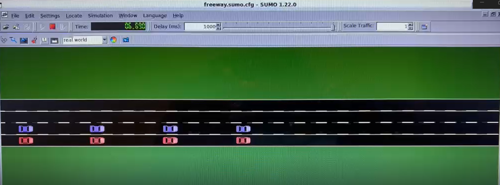

Caso 5 · Más de un pelotón
Qué se hizo. Simular dos pelotones de 8 vehículos al mismo tiempo, uno al lado del otro en carriles adyacentes. Se parte del escenario MultiPhase del caso 4, así que ambos líderes siguen el mismo perfil.
Para qué. El canal inalámbrico es compartido. Con un solo pelotón, la ocupación del canal es baja y la comunicación casi nunca es el cuello de botella. Al agregar un segundo pelotón, ambos compiten por el medio: aumentan las colisiones de paquetes y los tiempos de espera, y aparece un efecto que no existe en el caso aislado. Es la situación que se dará en una carretera real.
Cómo se implementa. Sin modificar el código base de Plexe, en tres pasos: una configuración nueva en omnetpp.ini, un traffic manager que alinea los pelotones y un script que separa los gráficos por pelotón.
Cómo reparte Plexe los vehículos
El traffic manager inserta los vehículos alternando carriles. Con 16 vehículos y 2 carriles queda así:
nodeId |
Carril | Pelotón | Rol |
|---|---|---|---|
| 0 | 0 | A | Líder (usa ACC) |
| 1 | 1 | B | Líder (usa ACC) |
| 2, 4, …, 14 | 0 | A | Seguidores |
| 3, 5, …, 15 | 1 | B | Seguidores |
- Pares = pelotón A (carril 0); impares = pelotón B (carril 1).
- Cada vehículo usa solo los beacons de su propio pelotón (
SimplePlatooningAppdescarta los del otro), pero todos comparten el mismo canal. MultiPhaseScenariotrata como líder a todo vehículo connodeId < nLanes. Por esoscenario.nLanes = 2es necesario: así el nodo 1 también sigue el perfil MultiPhase.- Ambos pelotones usan el mismo controlador, porque
**.traffic.controllerse aplica a todos los seguidores. Los parámetros sí pueden variar por vehículo en el.ini(por ejemplo*.node[1].scenario.…o*.node[1].nic.mac1609_4.txPower).
Paso 1 · Configuración en omnetpp.ini
Se agregan dos configuraciones al final de ~/src/plexe/examples/platooning/omnetpp.ini:
[Config MultiPhaseTwoPlatoons]
extends = MultiPhase
**.numberOfCars = 16
**.numberOfLanes = 2
**.traffic.nCars = 16
**.traffic.nLanes = 2
*.node[*].scenario.nLanes = 2
**.traffic_type = "AlignedPlatoonsTrafficManager"
[Config MultiPhaseTwoPlatoonsNoGui]
extends = MultiPhaseTwoPlatoons
*.manager.command = "sumo"
*.manager.ignoreGuiCommands = true
output-vector-file = ${resultdir}/MultiPhaseTwoPlatoons_${controller}_${headway}_${repetition}.vec
output-scalar-file = ${resultdir}/MultiPhaseTwoPlatoons_${controller}_${headway}_${repetition}.sca
- 16 vehículos, 8 por pelotón (
platoonSizesigue en 8) y 2 carriles: un pelotón por carril. nCarsynLanesson variables de iteración ya definidas en[General](${nCars = 8},${nLanes = 1}). OMNeT++ no permite redefinirlas, por eso se asignan valores literales.MultiPhaseTwoPlatoonsNoGuicorre consumo, sin ventana, y guarda los resultados con el mismo nombre que la versión con GUI, para que los scripts de análisis los encuentren.- Sin la línea
**.traffic_type, se usa el traffic manager de serie y no hace falta el paso 2.
Paso 2 · Alinear los pelotones
El PlatoonsTrafficManager de serie desplaza cada carril al azar entre 0 y 20 m, así que los pelotones no parten lado a lado. Para alinearlos se creó AlignedPlatoonsTrafficManager, una copia con una sola línea distinta:
// PlatoonsTrafficManager.cc (original)
for (int l = 0; l < nLanes; l++) laneOffset[l] = uniform(0, 20);
// AlignedPlatoonsTrafficManager.cc (nuevo)
for (int l = 0; l < nLanes; l++) laneOffset[l] = 0;
Archivos nuevos en ~/src/plexe/src/plexe/traffic/: AlignedPlatoonsTrafficManager.h, .cc y .ned. Son copias de PlatoonsTrafficManager.* con el nombre de la clase cambiado y la línea anterior. No se modifica ningún archivo existente.
Como son archivos C++ y NED nuevos, hay que recompilar Plexe (con el entorno cargado, ver Cómo ejecutar):
Paso 3 · Gráficos por pelotón
Se agrega este bloque al final de analysis/parse-config:
[config]
config = MultiPhaseTwoPlatoons
out = MultiPhaseTwoPlatoons
map = %(defaultMap)s
mapFile = %(file)s
prefix = m2p
merge = 1
El script nuevo analysis/plot-multiphase-two-platoons.R separa los datos por paridad de nodeId:
Genera 8 PDFs en analysis/, 4 por pelotón, con un panel por controlador:
| Pelotón A | Pelotón B |
|---|---|
multiphase-two-platoons-A-speed.pdf |
multiphase-two-platoons-B-speed.pdf |
multiphase-two-platoons-A-distance.pdf |
multiphase-two-platoons-B-distance.pdf |
multiphase-two-platoons-A-acceleration.pdf |
multiphase-two-platoons-B-acceleration.pdf |
multiphase-two-platoons-A-controller-acceleration.pdf |
multiphase-two-platoons-B-controller-acceleration.pdf |
Cómo ejecutar
Preparar la terminal (una vez por terminal):
source ~/src/omnetpp-6.2.0/setenv
cd ~/src/plexe
. ./setenv
export SUMO_HOME="$HOME/src/sumo-1.22.0" # solo si SUMO se compiló desde el código fuente
export PATH="$SUMO_HOME/bin:$PATH"
cd ~/src/plexe/examples/platooning
Con GUI, un controlador a la vez. Por ejemplo, PLOEG:
-r |
0 | 1 | 2 | 3 | 4 | 5 |
|---|---|---|---|---|---|---|
| Controlador | ACC (0.3 s) | ACC (1.2 s) | CACC | PLOEG | CONSENSUS | FLATBED |
Sin GUI, los 6 controladores:
plexe_run -u Cmdenv -c MultiPhaseTwoPlatoonsNoGui -r 0
plexe_run -u Cmdenv -c MultiPhaseTwoPlatoonsNoGui -r 1
plexe_run -u Cmdenv -c MultiPhaseTwoPlatoonsNoGui -r 2
plexe_run -u Cmdenv -c MultiPhaseTwoPlatoonsNoGui -r 3
plexe_run -u Cmdenv -c MultiPhaseTwoPlatoonsNoGui -r 4
plexe_run -u Cmdenv -c MultiPhaseTwoPlatoonsNoGui -r 5
Procesar los resultados y generar los 8 PDFs:
cd ~/src/plexe/examples/platooning/analysis
genmakefile.py parse-config > Makefile
make
Rscript plot-multiphase-two-platoons.R
Lo que deberías observar

Se abre sumo-gui con los dos pelotones lado a lado y alineados: el pelotón A en rojo (carril 0) y el pelotón B en morado (carril 1). Plexe colorea cada vehículo según su pelotón. Con el traffic manager de serie, en cambio, los pelotones aparecen desfasados hasta 20 m.
Cómo se mide. Ocupación del canal y tasa de colisiones de paquetes como indicadores de red, y estabilidad de cada pelotón por separado como indicador de control. La comparación relevante es contra la misma configuración con un solo pelotón.